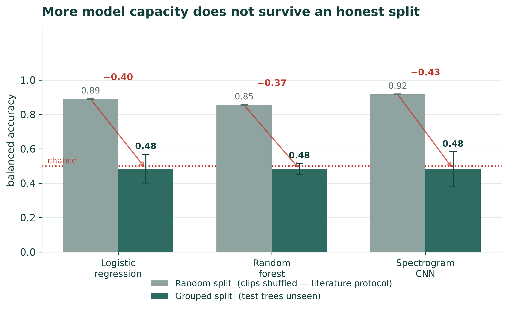
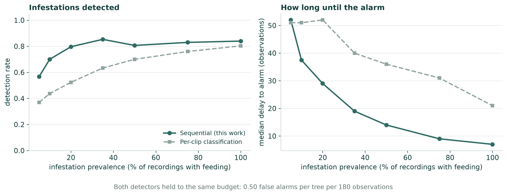
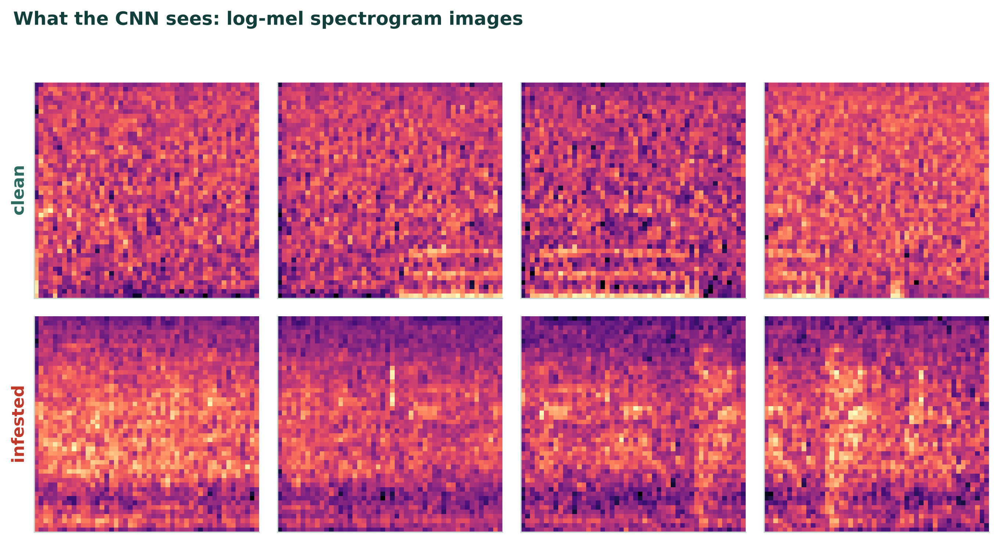

SAIF 2026 · Tuwaiq Academy · Project findings
Acoustic sensors are the leading way to catch wood-boring larvae inside a tree before the damage shows. Published studies report accuracies near 100%. This project tested whether those numbers survive an honest split of the data.
Recordings shuffled, then divided. This is standard practice in the published literature.
Divided by tree, so no tree appears in both training and test. Chance is 0.500.
The finding
Identical features. Identical models. The one thing that changes is whether a tree can appear in both the training set and the test set.
When it can, the models reach 0.890 balanced accuracy — in line with the field's published results. When it cannot, all three land at chance. The gap is not a quirk of one model: it reproduces across logistic regression, a random forest, and a convolutional network trained on spectrogram images.

| Model | Random split | Grouped split | Gap |
|---|---|---|---|
| Logistic regression | 0.890 | 0.485 | +0.405 |
| Random forest | 0.854 | 0.482 | +0.373 |
| Spectrogram CNN | 0.917 | 0.483 | +0.434 |
The cause
A gap alone does not say what leaked. So the same features were used to train a classifier on a different target: not whether a recording is infested, but which of the 36 trees it came from.
It succeeds at 0.868 accuracy against a chance level of 0.028 — about 31 times chance. Tree identity is sitting in the features in a form any model can exploit, and under a random split every tree appears on both sides of the division, so exploiting it is rewarded.
The failure mode on unseen trees is visible in the confusion matrix. The random forest reaches recall 0.923 with specificity 0.041: it labels almost every tree infested, which scores well on one metric and is useless in a plantation.
The alternative
A technician walking a plantation with a probe has to judge a single recording against other trees. A sensor bolted to one trunk does not: it can compare that tree against its own earlier baseline, and accumulate evidence over weeks instead of ruling on one clip at a time.
That was tested with a CUSUM detector — sequential change detection, in continuous use since Page's 1954 paper on industrial inspection — against per-clip classification. Both were first calibrated to the same false-alarm budget, 0.5 false alarms per tree per 180 observations. Without that step the comparison means nothing, because any detector looks faster when allowed to cry wolf more often.

| Prevalence | Sequential rate | Delay | Per-clip rate | Delay |
|---|---|---|---|---|
| 10% | 0.700 | 38 | 0.437 | 51 |
| 20% | 0.797 | 29 | 0.523 | 52 |
| 35% | 0.853 | 19 | 0.633 | 40 |
| 50% | 0.807 | 14 | 0.700 | 36 |
Method
TreeVibes (Rigakis et al., 2021) — 4,939 labelled field recordings from 38 sensor-equipped trees across 142 days. Each filename carries its own timestamp and trunk temperature, in the form F_20200222172127_4_T14.0, which is what made the seasonal analysis possible to attempt at all.
The published annotation table has two columns that could plausibly be the label. Using the wrong one produces 68 clean against 4,871 infested — a near-total inversion that would have passed unnoticed. The labels used here were cross-checked against the dataset's own folder structure: 3,285 of 3,285 agree. The checker was then fed deliberately corrupted labels to confirm it fires.
261 per analysis window: log-mel energies, MFCCs with deltas, spectral shape, and burst statistics describing the impulsive character of larval feeding. The first burst implementation returned exactly zero for every recording in the dataset, because it thresholded on an absolute decibel level while the envelope's dynamic range was only about 12 dB. It was replaced with prominence-based peak detection, and a guard now raises an error if any feature family comes out constant.
A class-balanced subsample of 2,400 recordings yields 38,675 analysis windows across 36 trees. Two evaluation protocols were run on identical features and identical models: StratifiedKFold over shuffled recordings, and StratifiedGroupKFold grouped by tree.

Stated limitations
Conclusion
Random splitting was standard practice, not misconduct. But on data where each tree is recorded in a single state, it measures the wrong thing — and the correction costs nothing. Split by tree, and report what that gives.
The measurement this field is missing is a dataset of trees instrumented before infestation and recorded through it: the same tree, both states, across a season. Until that exists, no early-detection claim on this kind of data can be honestly validated, and no per-tree method can be properly tested.
References
Rigakis, I., Potamitis, I., Tatlas, N.-A., Potirakis, S. M., & Ntalampiras, S. (2021). TreeVibes: Modern tools for global monitoring of trees for borers. Smart Cities, 4(1), 271–285.
Boulila, W., Driss, M., Al-Sarem, M., Saeed, F., & Krichen, M. (2023). Early detection of red palm weevil infestations using deep learning classification of acoustic signals. Computers and Electronics in Agriculture, 212, 108154.
Page, E. S. (1954). Continuous inspection schemes. Biometrika, 41(1–2), 100–115.
Systematic review of acoustic detection of wood-boring pests (2026). Insects, 17(10), 1081.